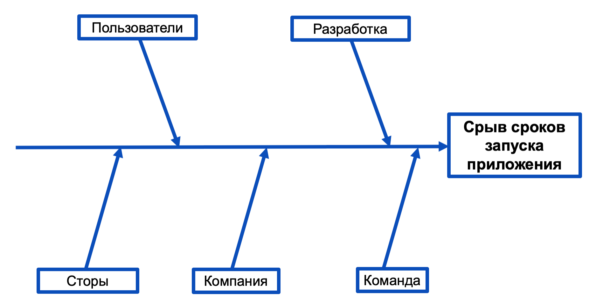
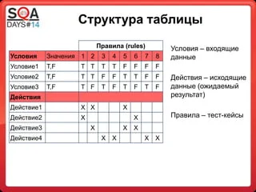
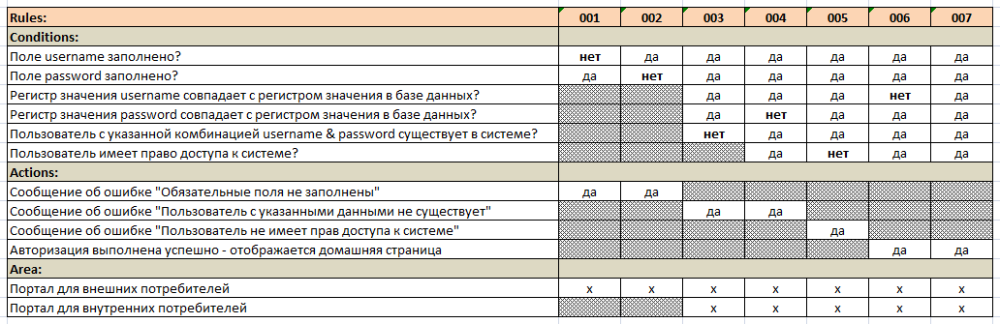
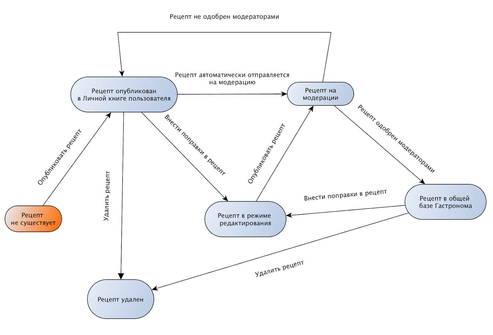

Что такое тест-дизайн?
Тест-дизайн — это процесс создания тестовых сценариев и данных для эффективной проверки работы программного обеспечения. Техники тест-дизайна позволяют выявлять дефекты на ранних этапах и оптимизировать покрытие тестами.
- Эквивалентное разбиение
- Граничные значения
- Попарное тестирование
- Тестирование по сценариям
Советы по выбору техник
- Используйте техники для сокращения числа тестов без потери качества
- Комбинируйте техники для сложных сценариев
- Документируйте выбранные подходы
Классы эквивалентности
Эквивалентное разбиение классов — это метод тестирования, в рамках которого входные данные или условия делятся на наборы классов эквивалентности, где каждый класс представляет собой группу значений, которые система обрабатывает одинаково. Для каждого класса выбирается одно значение для тестирования, предполагая, что если одно значение из этого класса работает правильно, то все остальные значения из того же класса будут обработаны аналогичным образом.

Граничные условия
Граничные условия — это метод тестирования, фокусирующийся на проверке корректности работы системы при использовании значений, находящихся на границах диапазона входных данных, а также на значениях, которые непосредственно соседствуют с этими границами.
Попарное тестирование
Попарное тестирование — это метод тестирования, при котором тестовые случаи разрабатываются таким образом, чтобы охватить все возможные пары значений входных параметров, чтобы обеспечить проверку всех взаимодействий между параметрами. Этот подход помогает обнаружить ошибки, которые могут возникнуть из-за комбинаций параметров, даже если число тестов значительно меньше, чем при полном переборе всех возможных комбинаций.
Тестирование по сценариям использования
Тестирование по сценариям использования — это метод тестирования, при котором тестовые случаи разрабатываются на основе сценариев использования, описывающих последовательность действий пользователя и взаимодействие с системой для достижения определённых целей. Целью такого тестирования является проверка того, что система выполняет необходимые функции и удовлетворяет требованиям пользователей, как это описано в сценариях использования.
Сценарий: Регистрация нового пользователя
Описание: Пользователь заполняет форму регистрации, предоставляя имя, email и пароль, и затем отправляет форму.
Проверка: Система корректно обрабатывает заполнение формы, сохраняет данные пользователя в базе данных и отправляет подтверждение на email.
Описание: Пользователь заполняет форму регистрации, предоставляя имя, email и пароль, и затем отправляет форму.
Проверка: Система корректно обрабатывает заполнение формы, сохраняет данные пользователя в базе данных и отправляет подтверждение на email.
Сценарий: Вход в систему
Описание: Пользователь вводит имя пользователя и пароль на странице входа и нажимает кнопку "Войти".
Проверка: Система корректно аутентифицирует пользователя, предоставляет доступ к функциям и обрабатывает неверные данные входа.
Описание: Пользователь вводит имя пользователя и пароль на странице входа и нажимает кнопку "Войти".
Проверка: Система корректно аутентифицирует пользователя, предоставляет доступ к функциям и обрабатывает неверные данные входа.
Диаграмма причинно-следственных связей
Диаграмма причинно-следственных связей — это графический метод, который отображает взаимосвязи между проблемой (или эффектом) и её потенциальными причинами. Диаграмма помогает организовать и визуализировать информацию о том, как различные факторы могут способствовать возникновению проблемы, и позволяет структурировать анализ для более эффективного поиска решений.
Пример: Производственные дефекты
Диаграмма помогает выявить возможные причины дефектов: недостатки в оборудовании, проблемы с качеством материалов, ошибки в методах производства, недостаточная квалификация сотрудников.
Диаграмма помогает выявить возможные причины дефектов: недостатки в оборудовании, проблемы с качеством материалов, ошибки в методах производства, недостаточная квалификация сотрудников.
Пример: Сбой в системе
Диаграмма помогает определить, какие факторы могли привести к сбою: ошибки в коде, проблемы с аппаратным обеспечением, неправильная конфигурация системы, сбои в процессе тестирования.

Диаграмма помогает определить, какие факторы могли привести к сбою: ошибки в коде, проблемы с аппаратным обеспечением, неправильная конфигурация системы, сбои в процессе тестирования.
Таблица принятия решений
Таблица принятия решений — это структурированный инструмент, который используется для оценки и сравнения различных вариантов решения на основе заданных критериев и условий. В таблице представлены строки с возможными условиями и варианты решений, а также соответствующие результаты или действия для каждого сочетания условий и решений. Это позволяет чётко увидеть, какое решение лучше всего соответствует заданным критериям.


Диаграмма перехода состояний
Диаграмма перехода состояний — это графическое представление, которое показывает все возможные состояния системы, способы перехода между этими состояниями, а также события или условия, которые инициируют эти переходы. Диаграмма предназначена для анализа и моделирования поведения системы в разных состояниях, выявления логики переходов и упрощения понимания динамических аспектов системы.
